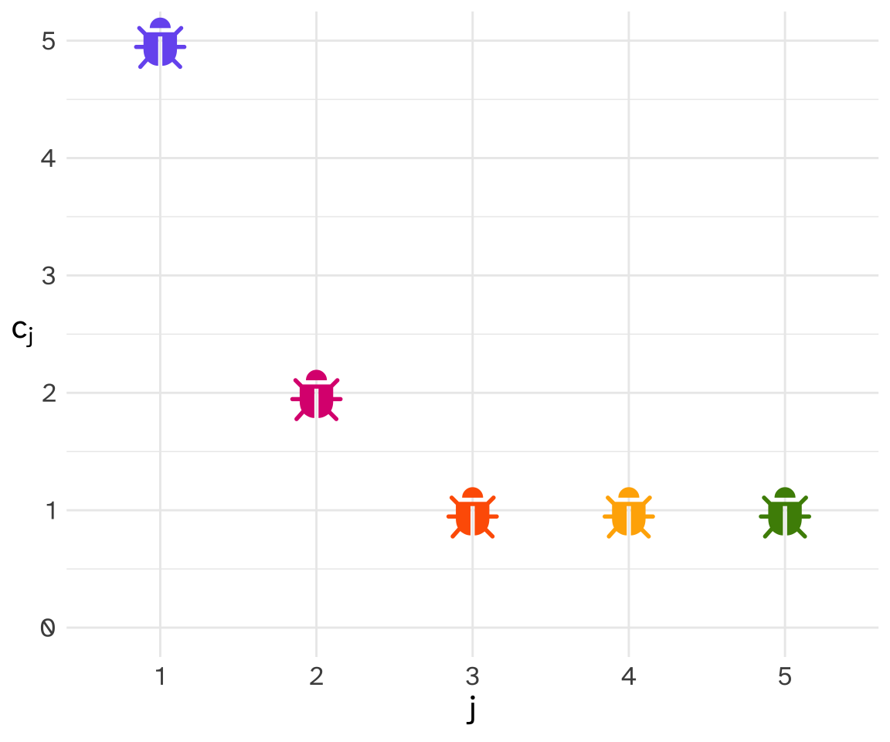
Data Sparsity
data
Bug Catching
Let’s say we’re biologists, working in a rain forest, and put out a bug net to survey the biodiversity of the forest. We catch 10 bugs, and each species is a different color:
[\(_1\), \(_2\), \(_3\), \(_4\), \(_5\), \(_6\), \(_7\), \(_8\), \(_9\), \(_{10}\)]
We have 10 bugs in total, so we’ll say \(N=10\). This is our “token count.” We’ll use the \(i\) subscript to refer to each individual bug (or token).
If we made a table of each bug species, it would look like:
| species | index \(j\) | count |
|---|---|---|
| 1 | 5 | |
| 2 | 2 | |
| 3 | 1 | |
| 4 | 1 | |
| 5 | 1 |
Let’s use \(M\) to represent the total number of species, so \(M=5\) here. This is our type count, and we’ll the subscript \(j\) to represent the index of specific types.
We can mathematically represent the count of each species like so.
\[ c_j = C(\class{fa fa-bug}{}_j) \]
Here, the function \(C()\) takes a specific species representation \(\class{fa fa-bug}{}_j\) as input, and returns the specific count \(c_j\) for how many times that species showed up in our net. So when \(j = {\color{#785EF0}{1}}\), \(\color{#785EF0}{c_1}=5\), and when \(j = {\color{#FFB000}{4}}\), \(\color{#FFB000}{c_4}=1\).
Here’s a plot, with the species id \(j\) on the x-axis, and the number of times that species appeared in the net \(c_j\) on the y-axis.
Making Predictions
What is the probability that tomorrow, when we put the net out again, that the first bug we catch will be from species ? Usually in these cases, we’ll use past experience to predict the future. Today, of the \(N=10\) bugs we caught, \(\color{#785EF0}{c_1}=5\) of them were species . We can represent this as a fraction like so:
\[ \frac{{\color{#785EF0}{\class{fa fa-bug}{}}}_1, {\color{#785EF0}{\class{fa fa-bug}{}}}_2, {\color{#785EF0}{\class{fa fa-bug}{}}}_3, {\color{#785EF0}{\class{fa fa-bug}{}}}_4, {\color{#785EF0}{\class{fa fa-bug}{}}}_5} {{\color{#785EF0}{\class{fa fa-bug}{}}}_1, {\color{#785EF0}{\class{fa fa-bug}{}}}_2, {\color{#785EF0}{\class{fa fa-bug}{}}}_3, {\color{#785EF0}{\class{fa fa-bug}{}}}_4, {\color{#785EF0}{\class{fa fa-bug}{}}}_5, {\color{#DC267F}{\class{fa fa-bug}{}}}_6, {\color{#DC267F}{\class{fa fa-bug}{}}}_7, {\color{#FE6100}{\class{fa fa-bug}{}}}_8, {\color{#FFB000}{\class{fa fa-bug}{}}}_9, {\color{#4C8C05}{\class{fa fa-bug}{}}}_{10}} \]
Or, we can simplify it a little bit. The top part (the numerator) is equal to \(\color{#785EF0}{c_1}=5\), and the bottom part (the denominator) is equal to the total number of bugs, \(N\). Simplifying then:
\[ \frac{\color{#785EF0}{c_1}}{N} = \frac{5}{10} = 0.5 \]
We’ll use this as our guesstimate of the probability that the very next bug we catch will be from species . Let’s use the function \(\hat{P}()\) to mean “our method for guessing the probability”, and \(\hat{p}\) to represent the guess we came to. We could express “our guess that the first bug we catch will be ” like so.
\[ {\color{#785EF0}{\hat{p}_1}} = \hat{P}({\color{#785EF0}{\class{fa fa-bug}{}}}) = \frac{\color{#785EF0}{c_1}}{N} = \frac{5}{10} = 0.5 \]
We can then generalize our method to any bug like so:
\[ \hat{p}_j = \hat{P}(\class{fa fa-bug}{}_j) = \frac{c_j}{N} \]
A wild appeared!
Let’s say we set out the net again, and the first bug we catch is actually . This is a new species of bug that wasn’t in the net the first time. Makes enough sense, the forest is very large. However, what probability would we have given catching this new species?
Well, \(\color{#35F448}{c_6} = C({\color{#35F448}{\class{fa fa-bug}{}}}) = 0\). So our estimate of the probability would have been \({\color{#35F448}{\hat{p}_6}} = \hat{P}({\color{#35F448}{\class{fa fa-bug}{}}}) = \frac{\color{#35F448}{c_6}}{N} = \frac{0}{10} = 0\).
Well obviously, the probability that we would catch a bug from species wasn’t 0, because events with 0 probability don’t happen, and we did catch the bug. Admittedly, \(N=10\) is a small sample to try and base a probability estimate on, so how large would we need the sample to be before we could make probabity estimates for all possible bug species, assuming we stick with the probability estimating function \(\hat{P}(\class{fa fa-bug}{}_j) = \frac{c_j}{N}\)?
You’d need
This kind of data problem does arise for counting species, but this is really a tortured analogy for language data.1 For example, let’s take all of the words from Chapter 1 of Mary Shelly’s Frankenstein, downloaded from Project Gutenberg. I’ll count how often each word occurred, and assign it a rank, with 1 being given to the word that occurred the most.
1 For me, I used this analogy to include colorful images of bugs in the lecture notes. For Good (1953), they had to use a tortured analogy since the methods for fixing probability estimates were still classified after being used to crack the Nazi Enigma Code in WWII.
Just to draw the parallels between the two analogies:
| variable | in the analogy | in Frankenstein Chapter 1 |
|---|---|---|
| \(N\) | The total number of bugs caught in the net. (\(N=10\)) | The total number of words in the first chapter. (\(N=1,780\)). |
| \(x_i\) | An individual bug. e.g. \(_1\) | An individual word token. In chapter 1, \(x_1\) = “i” |
| \(w_j\) | A bug species. | A word type. The indices are frequency ordered, so for chapter 1 \(w_1\) = “of” |
| \(c_j\) | The count of how many individuals there are of a species. | The count of how many tokens there are of a type. |
Here’s a table of the top 10 most frequent word types.
| \(w_j\) | \(c_j\) | \(j\) |
|---|---|---|
| of | 75 | 1 |
| the | 75 | 2 |
| and | 70 | 3 |
| to | 61 | 4 |
| a | 52 | 5 |
| her | 52 | 6 |
| was | 40 | 7 |
| my | 33 | 8 |
| in | 32 | 9 |
| his | 29 | 10 |
If we plot out all of the word types with the rank (\(j\)) on the x-axis and the count of each word type (\(c_j\)) on the y-axis, we get a pattern that if you’re not already familiar with it, you will be.
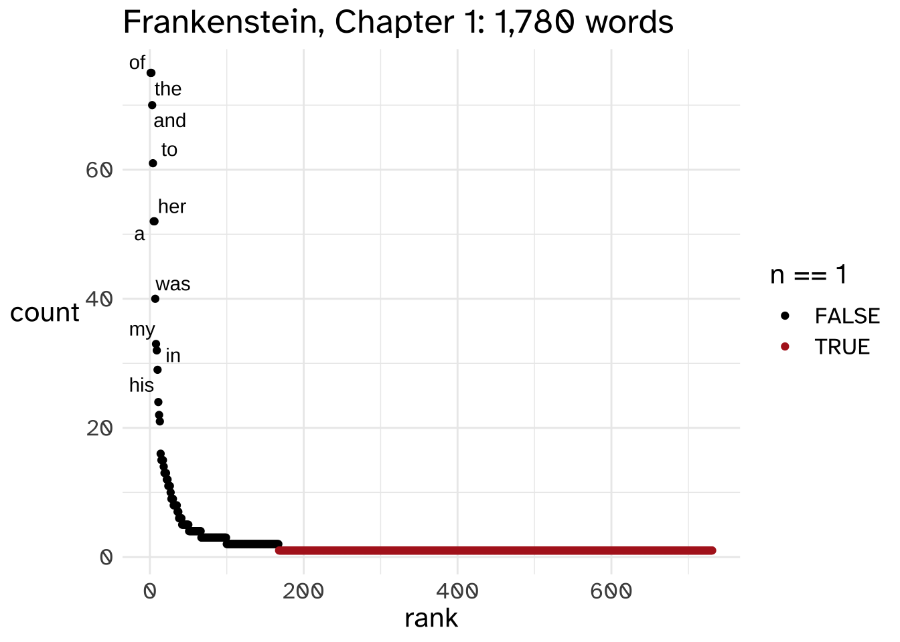
This is a “Zipfian Distribution” a.k.a. a “Pareto Distribution” a.k.a. a “Power law,” and it has a few features which make it ~problematic~ for all sorts of analyses.
For example, let’s come back to the issue of predicting the probability of the next word we’re going to see. Language Models are “string prediction models,” after all, and in order to get a prediction for a specific string, you need to have seen the string in the training data. Remember how our bug prediction method had no way of predicting that we’d see a because it had never seen one before?
There are a lot of possible string types of “English” that we have not observed in Chapter 1 of Frankenstein. Good & Turing proposed that you could guesstimate that the probability of seeing a never before seen “species” was about equal to the proportion of “species” you’d only seen once. With just Chapter 1, that’s a pretty high probability that there are words you haven’t seen yet.
| seen once? | total | proportion |
|---|---|---|
| no | 1216 | 0.683 |
| yes | 564 | 0.317 |
So, let’s increase our sample size. Here’s the same plot of rank by count for chapters 1 through 5.
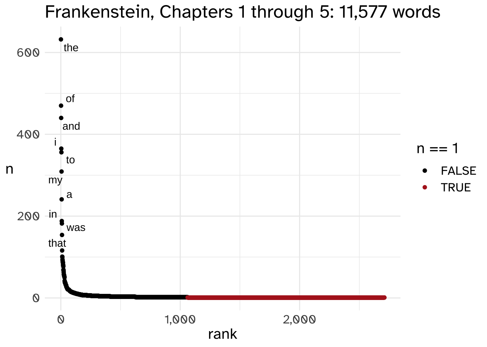
| seen once? | total | proportion |
|---|---|---|
| no | 9928 | 0.858 |
| yes | 1649 | 0.142 |
We increased the size of the whole corpus by a factor of 10, but we’ve still got a pretty high probability of encountering an unseen word.
Let’s expand it out to the whole book now.
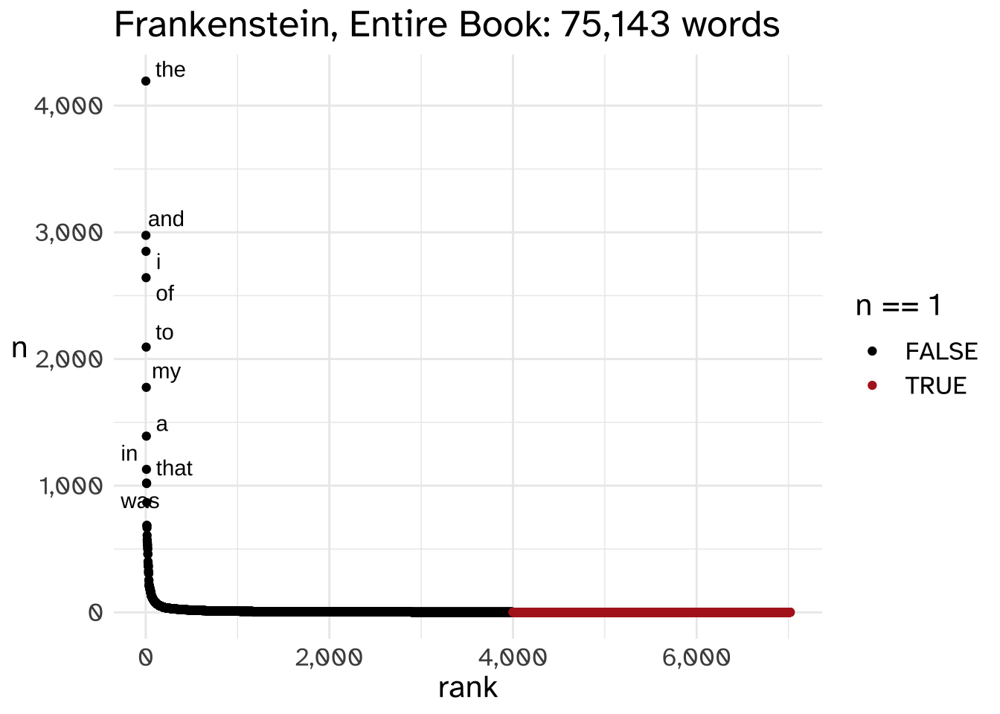
| seen once? | total | proportion |
|---|---|---|
| no | 72122 | 0.96 |
| yes | 3021 | 0.04 |
🎵 Ain’t no corpus large enough 🎵
As it turns out, there’s no corpus large enough to guarantee observing every possible word at least once, for a few reasons.
- The infinite generative capacity of language! The set of all possible words is, in principle infinitely large.
- These power law distributions will always have the a lot of tokens with a frequency of 1, and even just those tokens are going to have their probabilities poorly estimated.
To illustrate this, I downloaded the 1-grams of just words beginning with [Aa] from the Google Ngrams data set. This is an ngram dataset based on all of the books scanned by the Google Books project. It’s 4 columns wide, 86,618,505 rows long, and 1.8G large, and even then I think it’s a truncated version of the data set, because the fewest number of years any given word appears is exactly 40.
If we take just all of the words that start with [Aa] published in the year 2000, the most common frequency for a word to be is still just 1, even if it is a small proportion of all tokens.
| word frequency | number of types with frequency | proportion of all tokens |
|---|---|---|
| 1 | 205141 | 4.77e-10 |
| 2 | 152142 | 9.55e-10 |
| 3 | 107350 | 1.43e-09 |
| 4 | 80215 | 1.91e-09 |
| 5 | 60634 | 2.39e-09 |
| 6 | 47862 | 2.86e-09 |
An aside
I’ll be plotting the rank vs the frequency with logarithmic axes from here on. Linear axes give equal visual space for every incremental change in the x and y values, while lograrithmic axes put more space between smaller numbers than larger numbers.
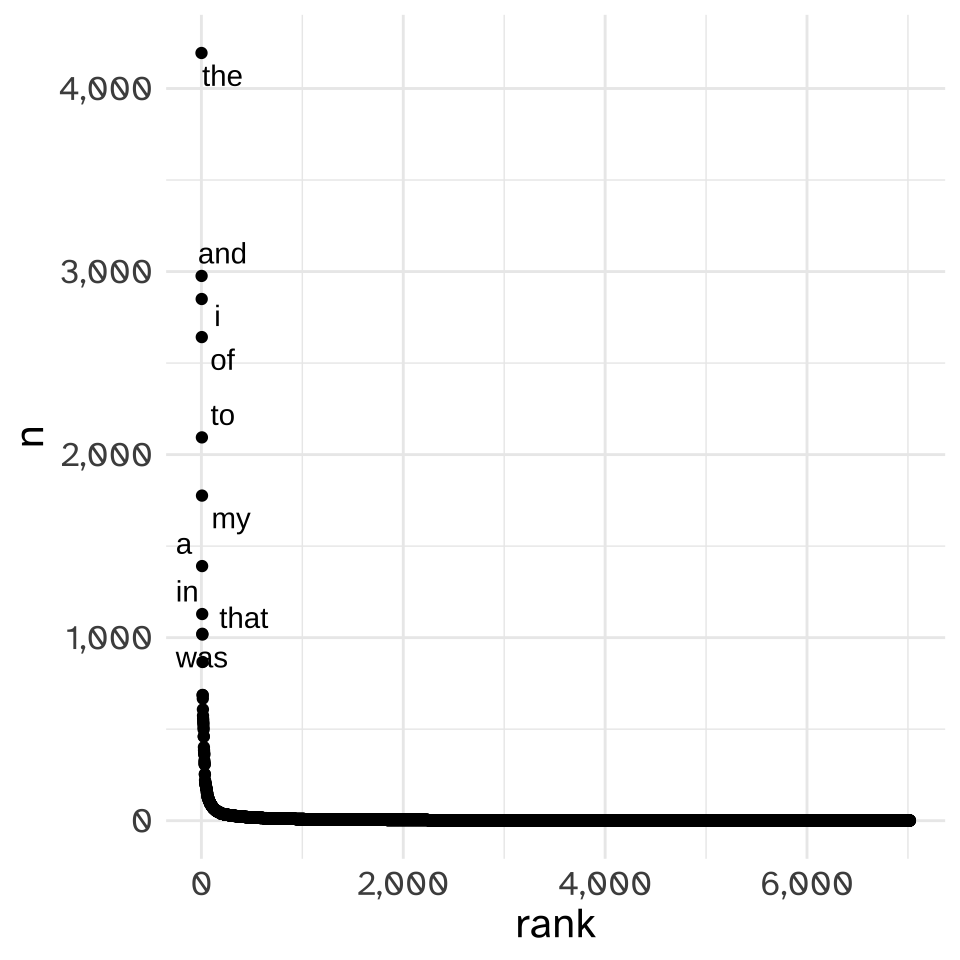
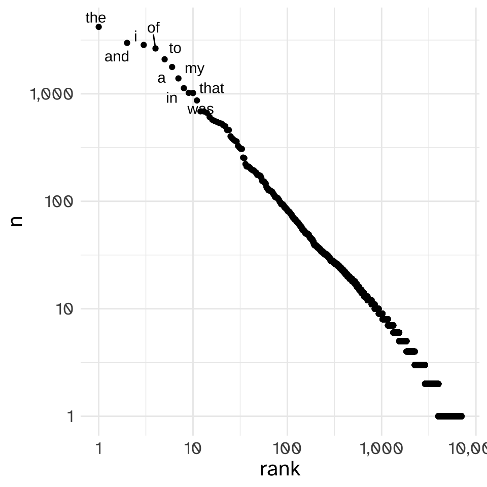
It gets worse
We can maybe get very far with our data sparsity for how often we’ll see each individual word by increasing the size of our corpus size, but 1gram word counts are rarely as far as we’ll want to go.
To come back to our bugs example, let’s say that bug species actually hunts bug species . If we just caught a in our net, it’s a lot more likely that we’ll catch a next, coming after the helpless than it would be if we hadn’t just caught a . To know what exactly the probability catching and then a is, we’d need to count up every 2 bug sequence we’ve seen.
Bringing this back to words, 2 word sequences are called “bigrams” and 3 word sequences are called “trigrams,” and they are also distributed according to a Power Law, and each larger string of words has a worse data sparsity one than the one before. But each larger string of words means more context, which makes for better predictions.
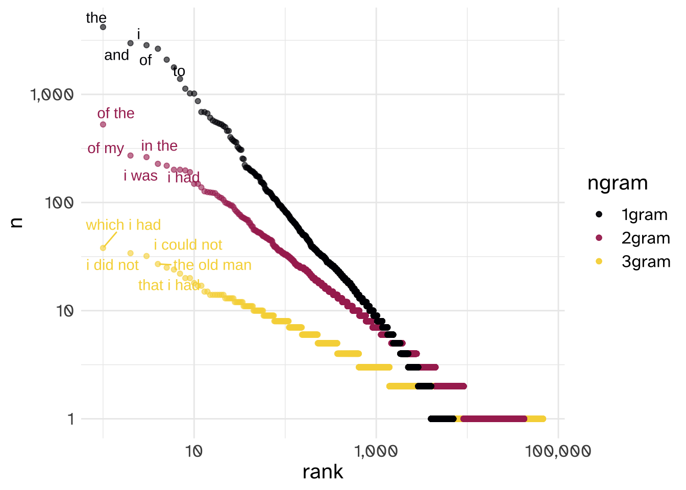
Some Notes on Power Laws
The power law distribution is pervasive in linguistic data, in almost every domain where we might count how often something happens or is observed. This is absolutely a fact that must be taken into account when we develop our theories or build our models. Some people also think it is an important fact to be explained about language, but I’m deeply skeptical.
A lot of things follow power law distributions. The general property of these distributions is that the second most frequent thing will have a frequency about as half as the most frequent thing, the third most frequent thing will have a frequency about a third of the most frequent thing, etc. We could put that mathematically as:
\[ c_j = \frac{c_1}{j} \]
For example, here’s the log-log plot of baby name rank by baby name frequency in the US between 1880 and 2017.2
2 Data from the babynames R package, which in turn got the data from the Social Security Administration.
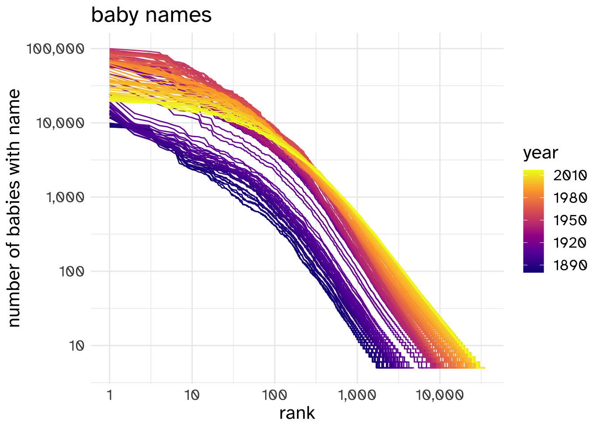
The log-log plot isn’t perfectly straight (it’s common enough for data like this to have two “regimes”).
Here’s the number of ratings each movie on IMDB has received.
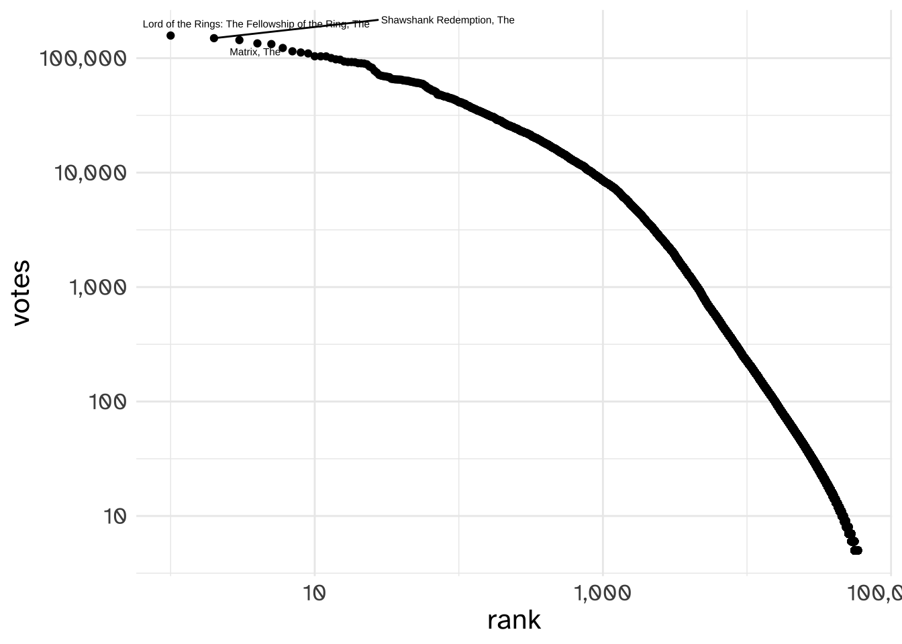
If we break down the movies by their genre, we get the same kind of result.
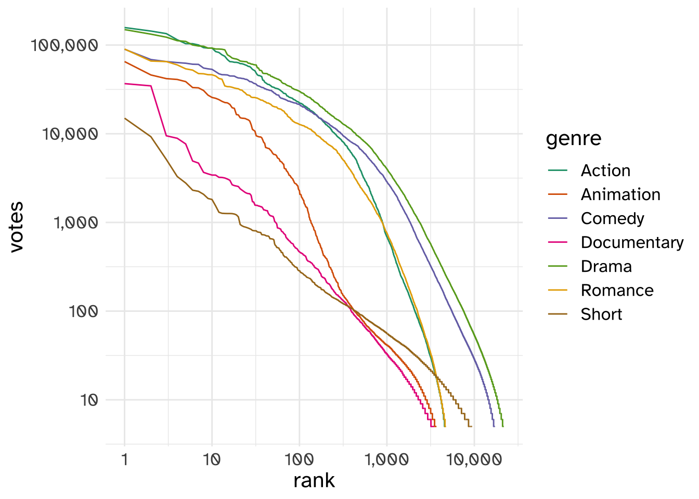
Other things that have been shown to exhibit power law distributions (Newman 2005; Jiang and Jia 2011) are
- US city populations
- number of citations academic papers get
- website traffic
- number of copies books sell
- earthquake magnitudes
These are all possibly examples of “preferential attachment”, but we can also create an example that doesn’t involve preferential attachment, and still wind up with a power-law. Let’s take the first 12 words from Frankenstein:
"to" | "mrs" | "saville" | "england" | "st" | "petersburgh" | "dec" | "11th" | "17" | "you" | "will" | "rejoice" |
Now, let’s paste them all together into one long string with spaces.
"to mrs saville england st petersburgh dec 11th 17 you will rejoice" |
And now, let’s choose another arbitrary symbol to split up words besides " ". I’ll go with e.
"to mrs savill" | " " | "ngland st p" | "t" | "rsburgh d" | "c 11th 17 you will r" | "joic" | "" |
The results aren’t words. They’re hardly useful substrings. But, if we do this to the entire novel and plot out the rank and count of thes substrings like they were words, we still get a power law distribution.
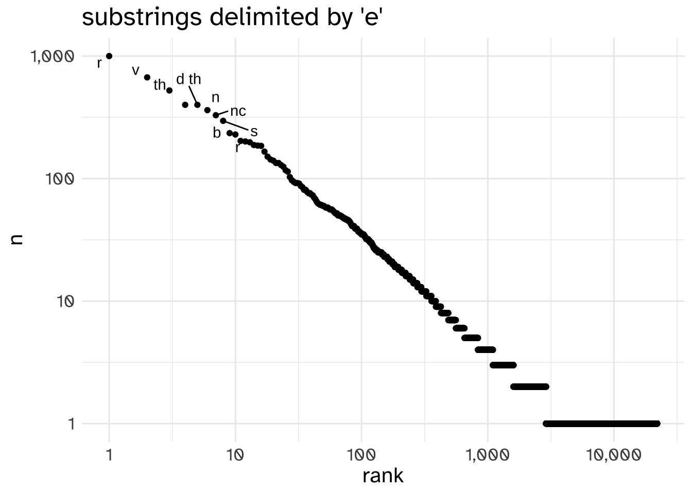
In fact, if I take the top 4 most frequent letters, besides spaces, that occur in the text and use them as substring delimiters, the resulting substring distributions are all power-law distributed.
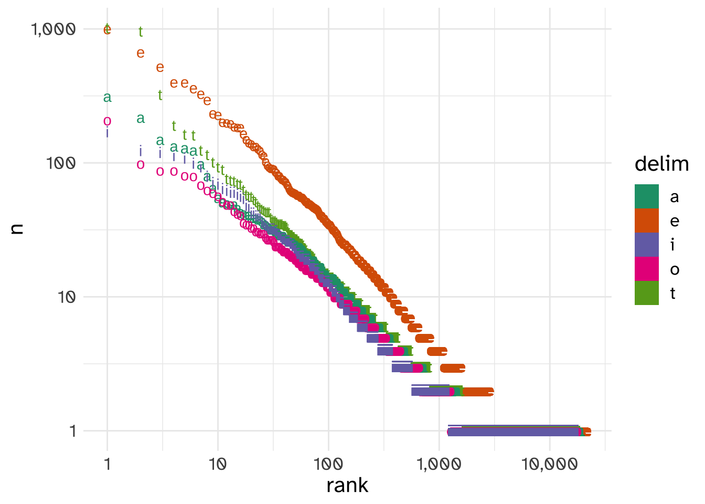
They even have other similar properties often associated with power law distributions in language. For example, it’s often been noted that more frequent words tend to be shorter. These weird substrings exhibit that pattern even more strongly than actual words do!
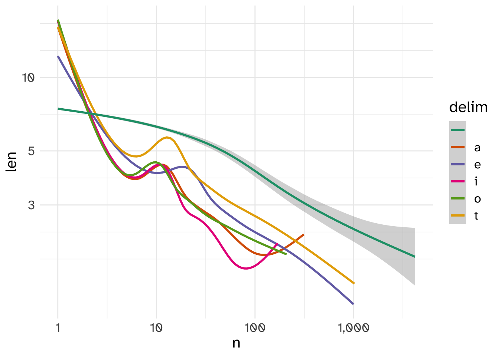
This is all to say, be cautious about explanations for power-law distributions that are
Extra
To work out just how accurate the Good-Turing estimate is, I did the following experiment.
Starting from the beginning of the book, I coded each word \(w_i\) for whether or not it had already appeared in the book, 1 if yes, 0 if no. This is my best shot at writing that out in mathematical notation.
\[ a_i = \left\{\begin{array}{ll}1,& x_i\in x_{1:i-1}\\ 0,& x_1 \notin x_{1:i-1}\end{array}\right\} \]
Then for every position in the book, I made a table of counts of all the words up to that point in the book so far, and got the proportion of word tokens that had appeared only once. Again, here’s my best stab at writing that out mathematically.
\[ c_{ji} = C(w_j), w_j \in x_{i:i-1} \]
\[ r_i = \sum_{j=1}\left\{\begin{array}{ll}1,&c_{ji}=1\\0,& c_{ji} >1 \end{array}\right\} \]
\[ g_i = \frac{r_i}{i-1} \]
frank_words$first_appearance <- NA
frank_words$first_appearance[1] <- 1
frank_words$gt_est <- NA
frank_words$gt_est[1] <- 1
for(i in 2:nrow(frank_words)){
i_minus <- i-1
prev_corp <- frank_words$word[1:i_minus]
this_word <- frank_words$word[i]
frank_words$first_appearance[i] <- ifelse(this_word %in% prev_corp, 0, 1)
frank_words$gt_est[i] <- sum(table(prev_corp) == 1)/i_minus
}Then, I plotted the Good-Turing estimate for every position as well as a non-linear logistic regression smooth.
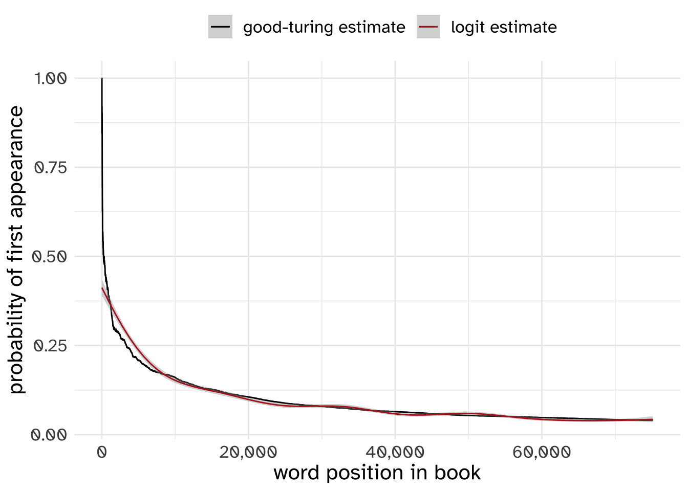
References
Good, I. J. 1953. “THE POPULATION FREQUENCIES OF SPECIES AND THE ESTIMATION OF POPULATION PARAMETERS.” Biometrika 40 (3-4): 237–64. https://doi.org/10.1093/biomet/40.3-4.237.
Jiang, Bin, and Tao Jia. 2011. “Zipf’s Law for All the Natural Cities in the United States: A Geospatial Perspective.” International Journal of Geographical Information Science 25 (8): 1269–81. https://doi.org/10.1080/13658816.2010.510801.
Newman, Mej. 2005. “Power Laws, Pareto Distributions and Zipf’s Law.” Contemporary Physics 46 (5): 323–51. https://doi.org/10.1080/00107510500052444.
Reuse
CC-BY-SA 4.0